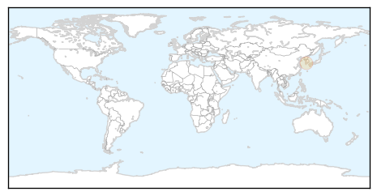
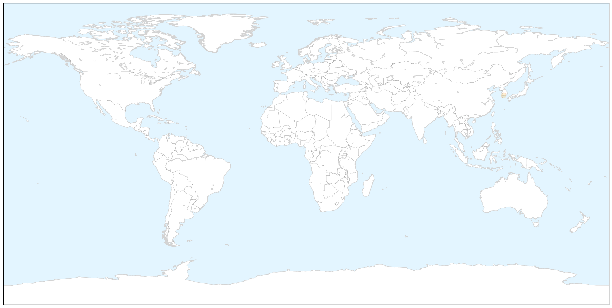
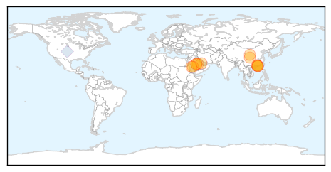

Mold/Fungal
30-Day Web Trend
30-Day Twitter Trend
0 alerts, 0 warnings

Article Locations

X

Article Confidences

Top Articles:
Top Tweets:
-
No tweets found for May 30, 2015
MERS
30-Day Web Trend
9 alerts, 2 warnings

30-Day Twitter Trend
7 alerts, 0 warnings

Article Locations
Article Confidences

Top Articles:
- 0.999
- China's first confirmed MERS case arrived from Korea via Hong Kong, Others news, Health News, AsiaOne YourHealth
- 0.999
- SKorean MERS outbreak: 13th case confirmed
- 0.999
- Saudi Officials Find 'Extra' MERS Cases
- 0.999
- CDC Backtracks: Illinois Man Didn't Have MERS After All
- 0.998
- First case of confirmed MERS disease arrived in China via Hong Kong from Korea
- 0.997
- New Report Nails Camels As A Direct Source of MERS
- 0.997
- MERS strikes South Korea and China
- 0.997
- China has first MERS case as Korean cluster grows further
- 0.996
- Officials confirm first MERS case in China
- 0.996
- China Tracking Nearly 200 For Possible Infections
- 0.988
- China’s First MERS Case is South Korean
- 0.967
- Asiana passengers, crew quarantined in China after MERS exposure – The Korea Times
- 0.674
- Mers case brings back memories of Hong Kong's Sars outbreak
Top Tweets:
- 0.604
- RT: Repeat of Saudi experience? High health care worker coronavirus MERS infection rate in S. Korea - so far = 26% https:/…